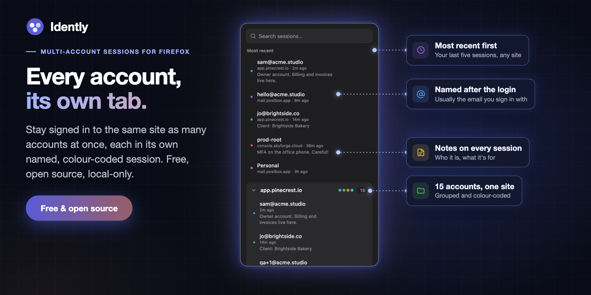
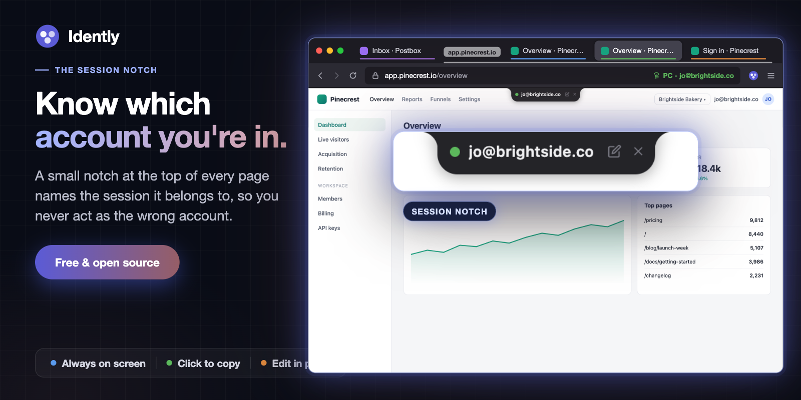
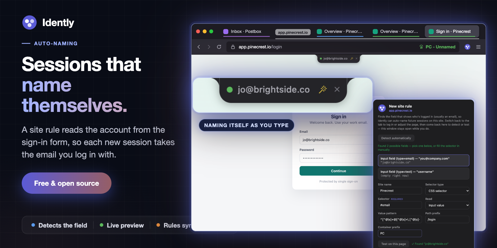

Multi-account sessions for Firefox
A free, open source Firefox extension for people who sign in to the same site as several different accounts: clients, test users, admin and personal. Each login gets its own named, colour-coded session in its own tab, and a small notch on the page always tells you which one you're in.

Sessions named after their logins, with notes, grouped by site.
Click New session tab on any site and Idently opens it in a fresh Firefox container, a separate cookie jar, so you can sign in as someone else without signing out of anything. Name it, give it a colour and a note, and it's one click away from then on. There is no account, no server and no tracking.
- Many logins per site
- No account needed
- Local-only
- No tracking
- MIT licensed

Firefox 139 or later. Loading it from source is covered in the README.
Built for fifteen accounts, not three
Say you look after fifteen clients, and each has its own login on the same
dashboard. With Idently that's fifteen sessions on one site, each one named
after the email it signs in with: jo@brightside.co,
accounts@mossandco.com, admin@harbourdental.nz, and so on.
Sign in once and the session names itself. Next week, type harbour into
the popup and press Enter, and you're back in that client's account in a new
tab, with the notch confirming it.
Every account, its own tab
Each session is a Firefox container: its own cookies, its own local storage, its own login. Open the same site in three sessions and you're three different people in three tabs. Sessions are grouped by site in the popup and on Firefox's tab strip, and the most recent ones are listed first.
Always know which account you're in
A small notch hangs from the top of every page that belongs to a session, showing its name and colour. It's there so you never post, pay or delete as the wrong account. Click it to copy the name. Option-drag it along the top edge if it covers something, and close it for the rest of that page load if you need to.

The notch names the session the page belongs to.
Sessions that name themselves
A new session starts unnamed. Name it from the notch, or add a site rule and let Idently do it: a rule points at the field that holds the account, usually the email box on the sign-in form, and the session takes whatever you type there. The notch previews the name as you type it.
You don't need to write a selector. Open Create rule for this site from the popup and Detect automatically lists the likely fields on the page, then Test on this page shows what each one reads. An optional pattern, such as an email shape, stops half-typed values from being used.

A rule reads the sign-in field and names the session as you type.
Find any session in a keystroke
The popup opens with the search box focused. Type part of a name, a site or a
note, use the arrow keys, and press Enter to open that session in a new tab.
Every word has to match, so acme admin narrows rather than widens.
Sessions whose container has no cookies left for their site are flagged as logged out, so you can tell at a glance which logins have expired.
Organise as you go
Edit any session's name, notes and colour from the popup. Change its domain
to merge two groups that are really one site, say account.example.com
into example.com. New session tabs are filed into a tab group named
after the site.
Backup and recovery
Export your sessions to a JSON file and import them into another Firefox profile or computer. Include cookies and live logins move too; leave them out and only the names, notes and colours do. Firefox keeps containers even when an extension is removed, so after a reinstall Recover containers finds the ones Idently was tracking and adopts them back, logins intact.
Works alongside Multi-Account Containers
Idently isn't a replacement for Mozilla's Multi-Account Containers. Think of it as a more in-depth take on the same idea, built for when you have a lot of logins. Multi-Account Containers suits a few long-lived containers, such as Work, Personal and Shopping. But it doesn't name containers for you, and one flat list gets hard to manage once you have more than a handful. Idently adds what that takes: sessions named automatically from the login email, grouped by site, searchable by name, site or note, and labelled on the page itself.
You can use both at once. Containers are built into Firefox, and both
extensions use the same ones, so Idently's sessions appear in Multi-Account
Containers' list as ordinary containers named site - name. You don't need
Multi-Account Containers installed, though: Idently uses Firefox's containers
directly and turns them on if they're off.
Containers aren't available in private windows, so Idently's sessions open in normal windows only.
Privacy
Idently makes no network requests at all. No account, no analytics, no tracking, no server. Sessions are stored by Firefox on your computer. Site rules and the notch setting use Firefox's sync storage, so they follow you between your own devices only if you use Firefox Sync. The privacy policy lists exactly what is stored and why each permission is needed.
Help and source
Questions, bugs and feature requests go to the support page. Idently is MIT licensed and the full source is on GitHub.